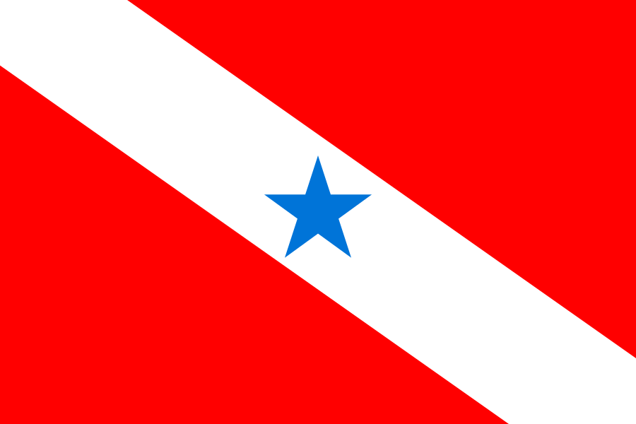

Painel de Dados do Pará
Bem vindo(a)
Use o seletor para começar a explorar os dados
Região:
Norte
Gestão:
X
em
X
com
X
Recursos:
Diário
,
Compras
,
Transparência
,
Contas
Ações:
Ouvidoria
,
MP
,
TC
,
TJ
População:
8.578.051
PIB:
X
IDH:
X
Desemprego:
X
IDEB:
X
Casos COVID:
X
Queimadas:
X
IEGM:
X
Projeto
open source
de
Lucas Menezes